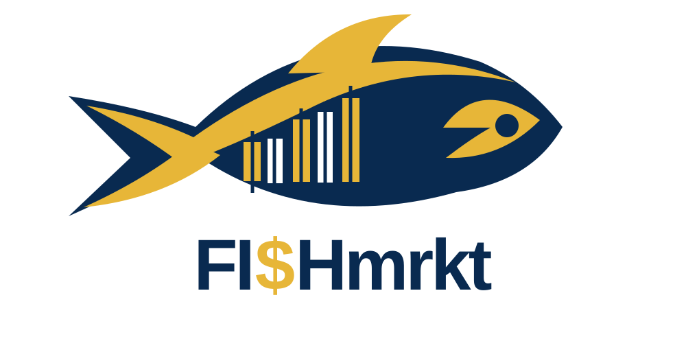

01 / Approved simplified identity

Two-color navy and gold logo for light backgrounds, documents, corporate applications and merchandise. The source PNG master is included in the downloadable brand kit; this repository version is a scalable SVG interpretation.
02 / Color system
#092A50 · Primary
#E7B638 · Signature
#F13638 · Restrained accent
#071525 · Dark surfaces
03 / Placement & text
Light surfaces
Use navy wordmark with gold dollar sign. Maintain clear space.
Dark surfaces
Use a reversed light mark; do not place the dark navy artwork directly on navy.
Signal red
Reserve red for market highlights, alert accents and small chart elements.
Typography
Bold geometric sans for headlines, highly legible sans for data and body text.
04 / Assets & use
Download scalable dual-color logo SVG

FI$H is virtual capital. FI$H_usd is the default denomination. Never imply FI$H is redeemable or that simulated results are live investments.